PACANI, empresa dedicada al mantenimiento y reparación de maquinaria pesada, solicita capacitar a sus técnicos en la identificación de desgaste, selección de lubricantes y protocolos de seguridad y mantenimiento.
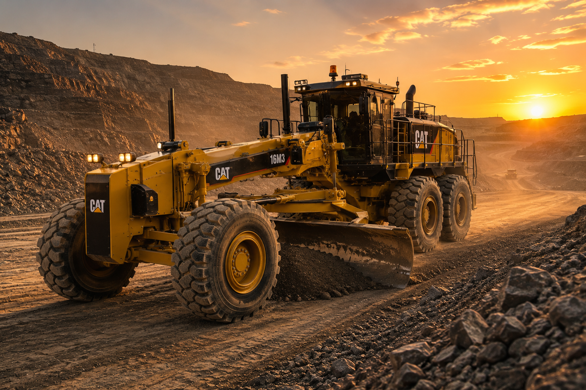
FIG. 01 — CONTEXTO DEL CASO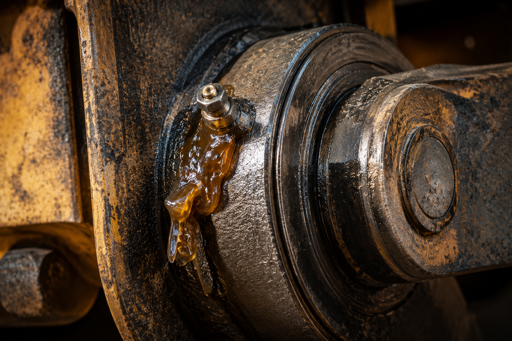
Articulan brazos y cucharones; trabajan a fricción oscilante constante.
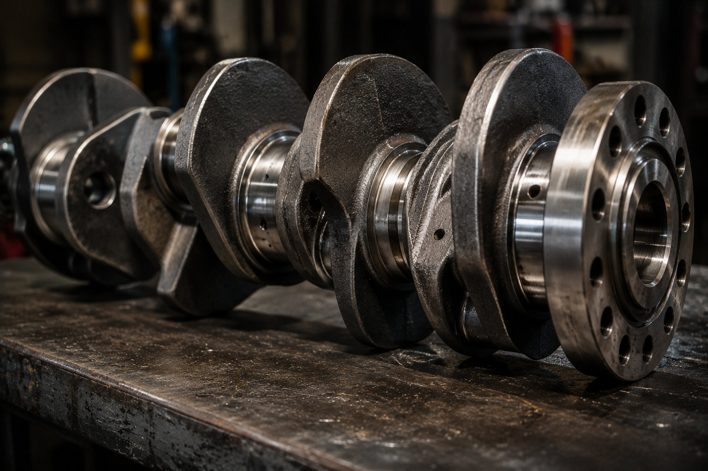
Transforma el movimiento alternativo del pistón en rotación, bajo carga cíclica.
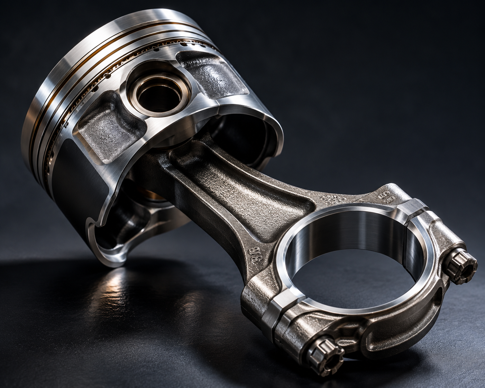
Conjunto deslizante expuesto a altas temperaturas y presión de combustión.
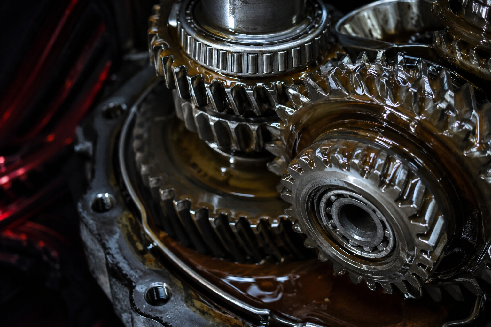
Transmiten torque en mandos finales y cajas, con contacto de rodadura-deslizamiento.
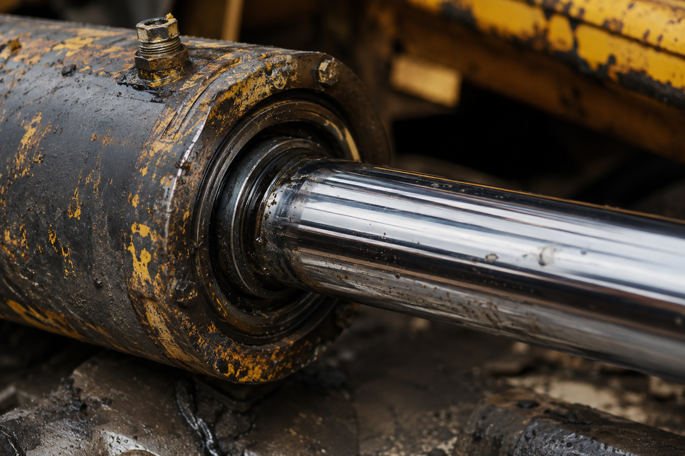
Cilindros hidráulicos cuyos sellos y vástagos sufren desgaste por contaminación.
| Componente | Tipo de desgaste predominante |
|---|---|
| Pasadores | Desgaste abrasivo y fretting por micro-desplazamientos oscilantes bajo carga, agravados por falta de película lubricante. |
| Cigüeñal | Fatiga superficial (pitting) en muñones de biela y bancada, sumada a desgaste adhesivo cuando la película hidrodinámica se rompe. |
| Biela – Pistón | Desgaste abrasivo en camisa por partículas contaminantes y scuffing (adhesivo) en condiciones de alta temperatura. |
| Engranajes | Fatiga superficial (pitting y micropitting) en el flanco del diente, además de desgaste abrasivo y adhesivo (scuffing). |
| Actuadores | Desgaste abrasivo y erosión en sellos por contaminación del fluido hidráulico, con riesgo de corrosión por humedad. |
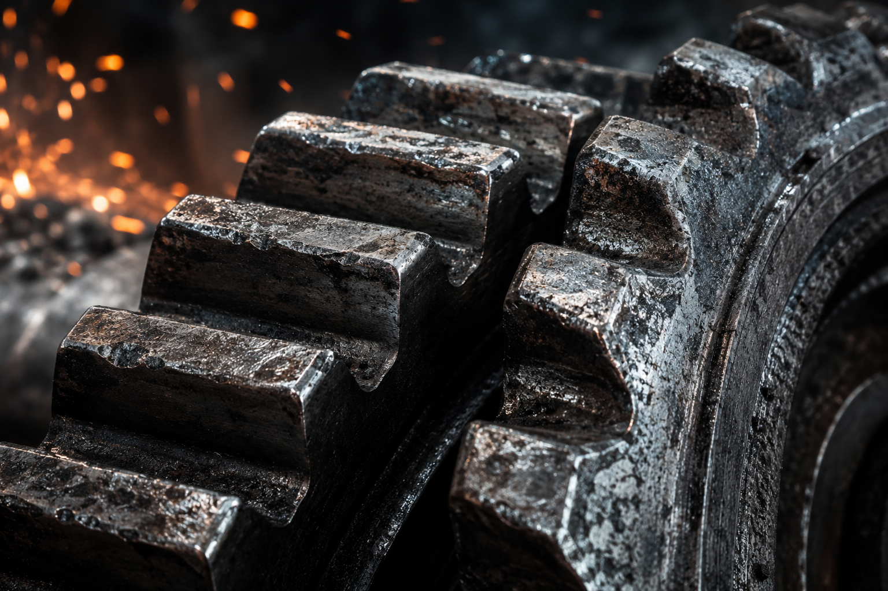
Esfuerzos de contacto cíclicos generan microgrietas subsuperficiales que progresan hasta desprender partículas de material, dejando picaduras visibles en la superficie.
La ruptura local de la película lubricante permite el contacto metal-metal: las asperezas se sueldan microscópicamente y se arrancan al separarse las superficies.
Partículas duras —contaminantes externos o residuos del propio desgaste— actúan como agentes de corte que rayan y erosionan progresivamente las superficies en movimiento.
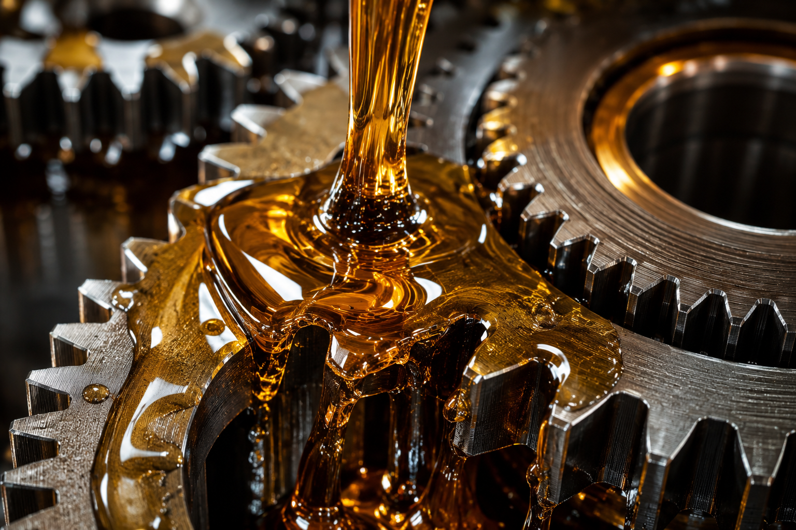
FIG. 02 — CRITERIOS DE SELECCIÓN| Sistema | Mobil | Castrol | Motul | Lubrax (Petrobras) |
|---|---|---|---|---|
| Motor diésel | Mobil Delvac™ Modern/Ultra | Castrol Vecton® | Motul Tekma Mega 15W-40 | Lubrax Tecno / Avante |
| Transmisión / mando final | Mobilube™ HD-A Plus 80W-90 (GL-5) | Transmax Axle EPX 80W-90 (GL-5) | Motul HD 80W-90 (GL-5) | Lubrax Gear |
| Sistema hidráulico | Mobil DTE™ 10 Excel | Hyspin® AWS | Línea Motul Hydraulic ISO | Lubrax ATF / Hidráulico |
| Grasa multipropósito EP | Mobilux™ EP / Mobilith SHC | Spheerol® / Molub-Alloy® | Motul Multi Grease 100 | Lubrax Lith EP-2 |
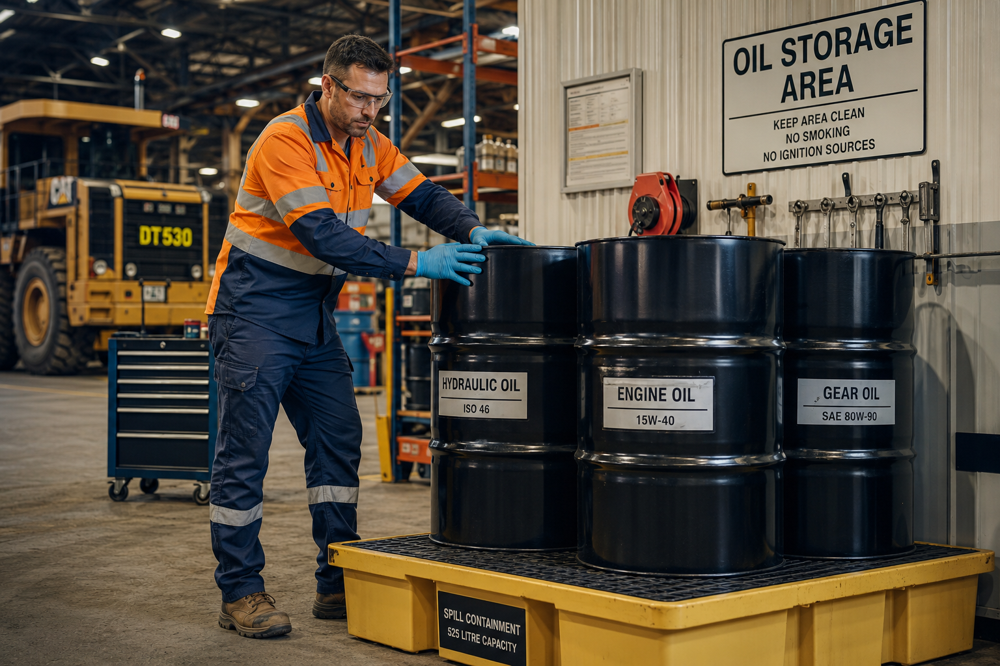
FIG. 03 — ALMACENAMIENTO Y EPP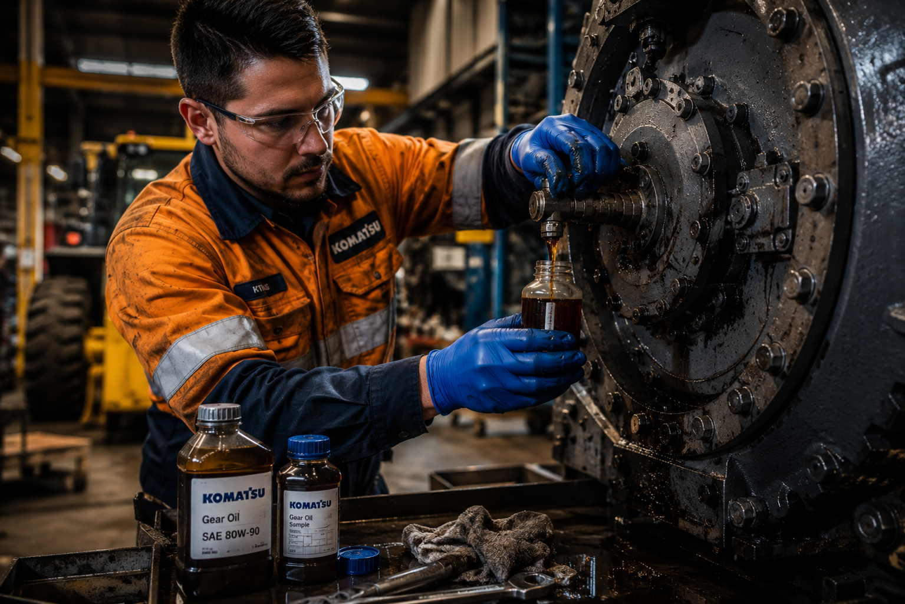
FIG. 04 — ANÁLISIS DE ACEITE USADOEl desgaste identificado en pasadores, cigüeñal, biela-pistón, engranajes y actuadores responde a mecanismos distintos —abrasión, adhesión y fatiga superficial— que exigen lubricantes específicos por sistema.
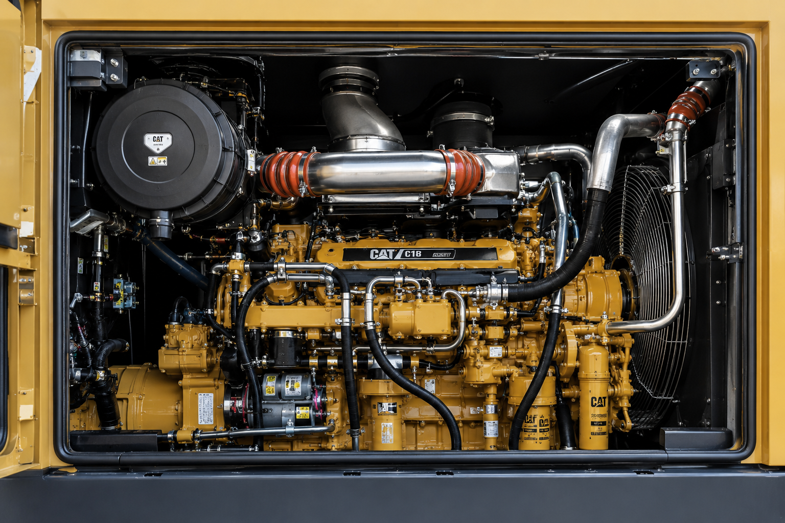
FIG. 05 — CIERRE